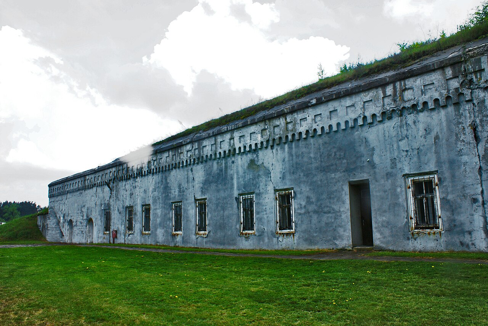
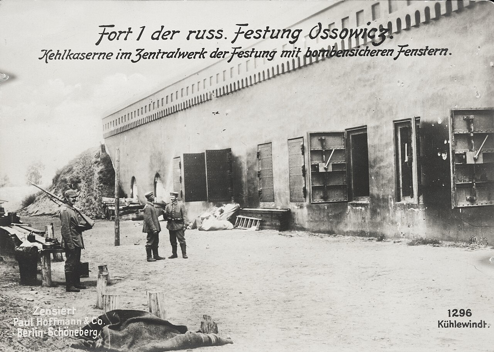
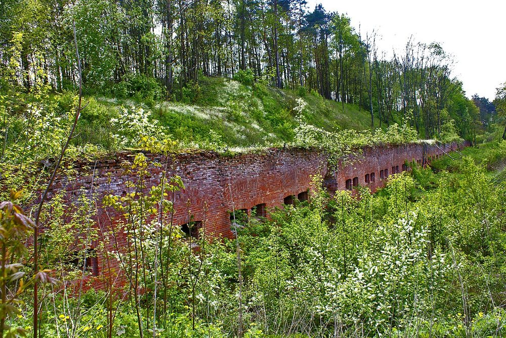

Центральный форт крепости Осовец, современный вид6 августа 1915 года к позициям ползёт зелёное облако газа — противогазов у гарнизона нет.
крепость · 1915 · река Бобр
Гарнизон крепости Осовец · 13-я рота 226-го Землянского полка
Крепость Осовец
Немцы бежали от тех, кто уже умер, — а они поднялись и пошли.
◆ Выбор
6 августа 1915 года. На позицию ползёт зелёное облако — газ. Противогаза нет, только мокрая тряпка. Отравленные, задыхающиеся — они всё равно встали и пошли навстречу.
◆ Стойкость
Около шестидесяти человек поднялось в штыковую — против семи тысяч, уверенных, что оборонять уже некому.
◆ Память
Немцы не приняли боя и побежали. Крепость, которую просили продержать двое суток, не сдалась и за полгода — и осталась в памяти под именем «атака мертвецов».